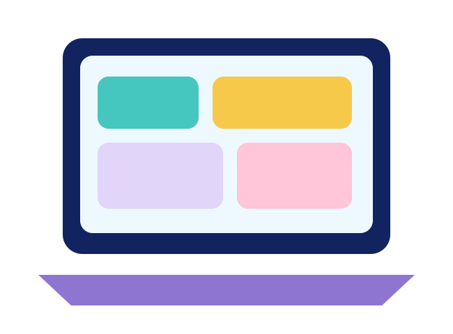

Student Resources
Student Resources
Use strategy cards, organizers, sentence starters, and reminders whenever needed.
I can choose a resource that helps me complete a literacy task.

Main Idea Organizer
Topic → Important details → Main idea
Inference Formula
Text clue + What I know = Inference
Text Evidence Starters
“The text says…” “One detail is…”
Discussion Support
Agree, add, ask, and respectfully disagree